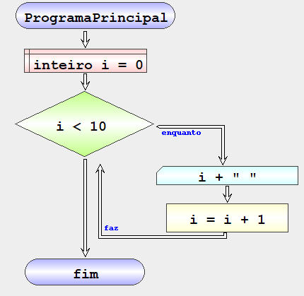
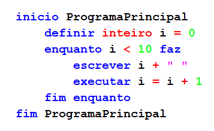

Repetição com controlo inicial – Enquanto…faz
Permite repetir um conjunto de instruções baseadas numa condição que é avaliada no início da repetição.
Exemplo - contar por ordem crescente
Algoritmo que imprime na consola os números inteiros entre 0 e 10 por ordem crescente
| Fluxograma | pseudocodigo |
|---|---|
|  |  |
Resultado: